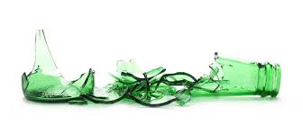

March 13, 2020
BREAKING NEWS: Glass and Single Stream Recycling Don’t Mix!

It was a news flash to me when I learned a few weeks ago that many of our surrounding counties no longer accept glass in Single Stream Recycling—a painful revelation for an environmentally concerned craft beer manufacturer. I spoke with our local waste management recycling managers and got the story behind the change and info on what you can do!
What happened:
Since single stream recycling was implemented in 2013 by the garbage collection industry, the quality of our recyclable materials has gone down. Single stream sorting facilities sift glass down to the bottom as ‘heavy fraction’ where it was supposed to be separated and recycled into new glass products. Unfortunately, the glass often BREAKS along the way with shards becoming stuck to paper and cardboard lowering the quality of those otherwise recyclable products. Even worse, non-recyclable trash finds its way into recycling bins and falls down to the heavy fraction along with the glass—including diapers so I am told—ewwww. As a result the heavy glass fracture was closer to 40-50% glass and not the 75% required by the US glass industry for recycling into new bottles.
All this not-so-pure glass fracture was put in shipping containers and sent to China until about 2 years ago when China banned shipments of trash and recyclables from the US. Other countries soon followed suit and our local landfills were left holding the trash bag. They recently concluded It just didn’t make sense to put all that energy into sorting glass which actually just lowered the quality of other recyclables, damaged equipment along the way, and ended up going back into the landfill. That’s why your local trash company does not accept glass in Single Stream Recycling any longer.
What should you do?
- Definitely do not put glass into singe stream recycling containers. If your collection company hasn’t prohibited it yet, they may be shamefully unaware of what happens to the recycling once it goes to their own processing facility. I made a few calls and found that to be the case with ours.
- Take your glass directly to a collection point that separates glass recyclables. Our own county crushes these separated glass recyclables to a fine sand-like substance and uses it for roads and other projects. Neighboring counties have begun a pilot program—adding special purple glass recycling containers to collection sites. This carefully separated glass (it has to be dropped into round 8” openings) is being sent to bottle manufacturers for production into new bottles.
- If you can’t get to a landfill convenience site that offers separated glass recycling, avoid buying products in glass containers.
- And if you happen to be a craft beer manufacturer…Lobby for a glass recycling solution or invest in switching to cans—because thinking of glass bottles going into the landfill BREAKS my environmentally conscious heart.